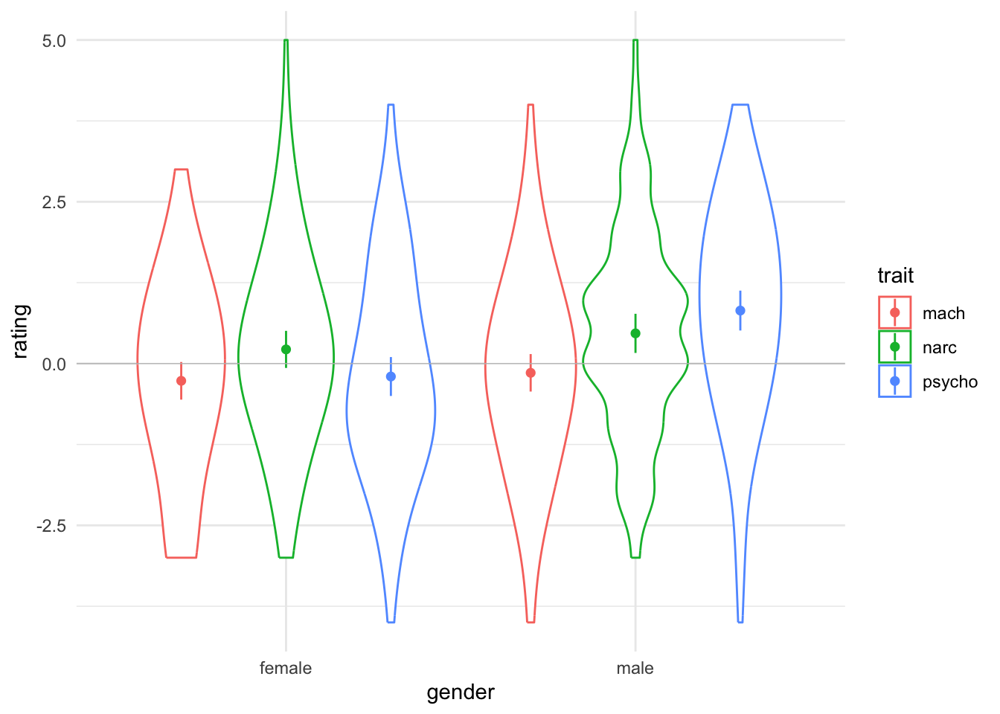

Abstract
In this paper I will explain a serious caveat to research using composite faces to conclude something about group differences from judgements of a single pair or a small number of pairs of composites. Using data simulation, I will demonstrate how this method inevitably leads to a high false positive rate, and how this problem is made worse by using a larger number of raters. I conclude by suggesting alternative methods for assessing the relationship between face morphology and individual traits.
A recent paper by Alper et al. (2021) used faces from the Faceaurus database (Holtzman, 2011). “Holtzman (2011) standardized the assessment scores, computed average scores of self- and peer-reports, and ranked the face images based on the resulting scores. Then, prototypes for each of the personality dimensions were created by digitally combining 10 faces with the highest, and 10 faces with the lowest scores on the personality trait in question (Holtzman, 2011).” This was done separately for male and female faces.
With 105 observers, Holtzman found that the ability to detect the composite higher in a dark triad trait was greater than chance for all three traits for each sex. However, since scores on the three dark triad traits are positively correlated, the three pairs of composite faces are not independent. Indeed, Holtzman states that five individuals were in all three low composites for the male faces, while the overlap was less extreme in other cases. Alper and colleagues replicated these findings in three studies with Ns of 160, 318, and 402, the larger two of which were pre-registered.
While I commend both Holtzman and Alper, Bayrak, and Yilmaz for their transparency, data sharing, and material sharing, I argue that the original test has an effective N of 2, not 105, and that further replications using these images, such as those done by Alper, Bayrak, and Yilmaz, regardless of number of observers or preregistered status, lend no further weight of evidence to the assertion that dark triad traits are visible in physical appearance.
To explain why, I’ll start with an analogy that has nothing to do with faces (bear with me). Imagine a researcher predicts that women born on odd days are taller than women born on even days. Ridiculous, right? So let’s simulate some data assuming that isn’t true. The code below samples 20 women from a population with a mean height of 162 cm and a standard deviation of 7 (values for women in Scotland). Half are born on odd days and half on even days.
set.seed(42)
stim_n <- 10
height_m <- 162
height_sd <- 7
odd <- rnorm(stim_n, height_m, height_sd)
even <- rnorm(stim_n, height_m, height_sd)
t <- t.test(odd, even, alternative = "greater")e <- effectsize::cohens_d(odd, even)
stats <- glue::glue("$t_{{{apa_num(t$parameter)}}} = {apa_num(t$statistic)}, p = {apa_p(t$p.value)}, d = {apa_num(e$Cohens_d)}$")A t-test shows no significant difference (\(t_{13.42} = 1.23, p = .121, d = 0.55\)), which is unsurprising. We simulated the data from the same distribution, so we know for sure there is no real difference here. Now we’re going to average the height of the women with odd and even birthdays. So if we create a full-body composite of women born on odd days, she would be 165.8 cm tall, and a composite of women born on even days would be 160.9 cm tall.
If we ask observers to look at these two composites, side-by-side, and judge which one looks taller, what do you imagine would happen? It’s likely that nearly all of them would judge the odd-birthday composite as taller. But let’s say that observers have to judge the composites independently, and they are pretty bad with height estimation, so their estimates for each composite have error with a standard deviation of 10 cm. We then compare their estimates for the odd-birthday composite with the estimate for the even-birthday composite in a paired-samples t-test.
set.seed(8675309)
obs_n <- 25 # number of observers
error_sd <- 10 # observer error
# add the error to the composite mean heights
odd_estimates <- mean(odd) + rnorm(obs_n, 0, error_sd)
even_estimates <- mean(even) + rnorm(obs_n, 0, error_sd)
t <- t.test(odd_estimates, even_estimates, alternative = "greater")Now the women with odd birthdays are significantly taller than the women with even birthdays (\(t_{43.06} = 2.41, p = .010, d = 0.55\))!
And if you increase the number of raters, you can virtually guarantee significant results, even for tiny differences or traits that people are very bad at estimating.
Figure 1: As you increase the number of raters up to 500, the power to detect a difference with a Cohen’s d as small as 0.2 increases to 95%.
Figure 2: Simulated data showing the distribution of effect sizes for the difference between pairs of composite faces sampled from the same distribution (i.e., no real effect). Points show the median unsigned effect size.
Now we can return to the Holtzman example.
Simulate 100 datasets of self and peer dark triad scores with the same structure as the original study. Each simulated dataset will have 48 women and 33 men whose Machiavellian, narcissism, NPD, and psychopathy scores are correlated in the same way as the original study.
Figure 3: Correlation structure of the original data and simulations.
Next, calculate the average dark triad score for each subject and create a “dark triad face morphology” score to represent the extent to which each subject’s face is perceived as high in dark triad traits. Importantly, in this simulation, the face morphology score will have zero correlation to the average dark triad score.
Figure 4: There is no systematic relationship between dark triad trait scores and facial morphology across replicates.
Now pick the 10 images with the highest and lowest scores for each trait for each gender and create composites of these images. Since the trait scores are positively correlated, there is likely to be a lot of overlap in the images that go into the three high and three low composites for each gender.
Even though the face attributes that are perceived as higher in dark triad traits are totally unrelated to the scores, the composites will still differ in these traits, some more than others, and half the time in the predicted direction.
Figure 5: Differences in average dark triad face morphology between the high and low dark triad trait groups for the first replicate.
Following Holtzman, we will simulate raters for each replicate giving -5 to +5 ratings for which face looks more Machiavellian, narcissistic, or psychopathic.
By chance alone, some of the values will be significant in the predicted direction.
| gender | trait | estimate | statistic | p.value | sig |
|---|---|---|---|---|---|
| female | mach | -0.27 | -1.82 | 0.96 | FALSE |
| female | narc | 0.22 | 1.52 | 0.07 | FALSE |
| female | psycho | -0.20 | -1.32 | 0.90 | FALSE |
| male | mach | -0.14 | -0.98 | 0.84 | FALSE |
| male | narc | 0.47 | 3.06 | 0.00 | TRUE |
| male | psycho | 0.82 | 5.27 | 0.00 | TRUE |

Figure 6: Distribution of replicates with 0 to 6 significant results in the predicted direction (one-tailed one-sample t-tests with alpha = 0.05).
People tend to show high agreement on stereotypical social perceptions from the physical appearance of faces, even when physical appearance is not meaningfully associated with the traits being judged (Jones et al., 2021; Todorov et al., 2008; Zebrowitz & Montepare, 2008). We can be sure that by chance alone, our two composites will be at least slightly different on any measure, even if they are drawn from identical populations.
The smaller the number of stimuli that go into each composite, the larger the mean (unsigned) size of this difference. With only 10 stimuli per composite (like the Facesaurus composites), the mean unsigned effect size of the difference between composites from populations with no real difference is 0.35 (in units of SD of the original trait distribution). If our observers are accurate enough at perceiving this difference, or we run a very large number of observers, we are virtually guaranteed to find significant results every time. Additionally, there is a 50% chance that these results will be in the predicted direction, and this direction will be replicable across different samples of observers for the same image set.
So what does this mean for studies of the link between personality traits and facial appearance? The analogy with birth date and height holds. As long as there are facial morphologies that are even slightly consistently associated with the perception of a trait, then composites will not be identical in that morphology. Thus, even if that morphology is totally unassociated with the trait as measured by, e.g., personality scales or peer report (which is often the case), using the composite rating method will inflate the false positive rate for concluding a difference.
The smaller the number of stimuli that go into each composite, the greater the chance that they will be visibly different in morphology related to the judgement of interest, just by chance alone. The larger the number of observers or the better observers are at detecting small differences in this morphology, the more likely that “detection” will be significantly above chance. Repeating this with a new set of observers does not increase the amount of evidence you have for the association between the face morphology and the measured trait. You’ve only measured it once in one population of faces. If observers are your unit of analyses, you are making conclusions about whether the population of observers can detect the difference between your stimuli, you cannot generalise this to new stimulus sets.
So how should researchers test for differences in facial appearance between groups?
Assessment of individual face images, combined with mixed effects models (L. M. DeBruine & Barr, 2021), can allow you to simultaneously account for variance in both observers and stimuli, avoiding the inflated false positives of the composite method (or aggregating ratings). People often use the composite method when they have too many images for any one observer to rate, but cross-classified mixed models can analyse data from counterbalanced trials or randomised subset allocation.
Another reason to use the composite rating method is when you are not ethically permitted to use individual faces in research, but are ethically permitted to use non-identifiable composite images. In this case, you can generate a large number of random composite pairs to construct the chance distribution. The equivalent to a p-value for this method is the proportion of the randomly paired composites that your target pair has a more extreme result than. While this method is too tedious to use when constructing composite faces manually, scripting allows you to automate such a task.
set.seed(8675309) # for reproducibility
# load 20 faces
f <- load_stim_canada("f") |> resize(0.5)
# set to the number of random pairs you want
n_pairs <- 5
# repeat this code n_pairs times
pairs <- lapply(1:n_pairs, function (i) {
# sample a random 10:10 split
rand1 <- sample(names(f), 10)
rand2 <- setdiff(names(f), rand1)
# create composite images
comp1 <- avg(f[rand1])
comp2 <- avg(f[rand2])
# save images with paired names
nm1 <- paste0("img_", i, "_a")
nm2 <- paste0("img_", i, "_b")
write_stim(comp1, dir = "images/composites", names = nm1)
write_stim(comp2, dir = "images/composites", names = nm2)
})Figure 7: Five random pairs of composites from a sample of 20 faces (10 in each composite). Can you spot any differences?
All image sets used in this tutorial are available on a CC-BY license at figshare and all software is available open source. The code to reproduce this paper can be found at https://github.com/debruine/composites.
We used R (Version 4.3.1; R Core Team, 2023) and the R-packages broom (Version 1.0.5; Robinson et al., 2023), dplyr (Version 1.1.2; Wickham, François, et al., 2023), faux (Version 1.2.1; L. DeBruine, 2023), ggplot2 (Version 3.4.2; Wickham, 2016), glue (Version 1.6.2; Hester & Bryan, 2022), kableExtra (Version 1.3.4; Zhu, 2021), papaja (Version 0.1.1; Aust & Barth, 2022), purrr (Version 1.0.1; Wickham & Henry, 2023), tidyr (Version 1.3.0; Wickham, Vaughan, et al., 2023), tinylabels (Version 0.2.3; Barth, 2022), webmorphR (Version 0.1.1; L. DeBruine, 2022; L. DeBruine & Jones, 2017), and webmorphR.stim (Version 0.0.0.9002; L. DeBruine & Jones, 2017) to produce this manuscript.